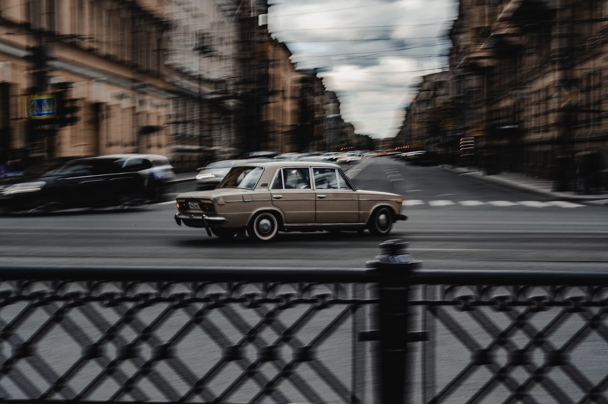

Несколько коротких фактов о Санкт-Петербурге: Город называют «Северной Венецией», потому что водная поверхность занимает около 10% всей площади города. Метрополитен Санкт-Петербурга — самый глубокий в мире: подземка уходит в глубину на 70–80 метров. Протяжённость трамвайных путей в городе составляет 600 километров, этот факт занесён в Книгу рекордов Гиннесса. Исаакиевский собор — самый крупный в России и четвёртый по величине в мире. Памятник Николаю I на Исаакиевской площади — единственный в мире монумент, имеющий всего две точки опоры.
